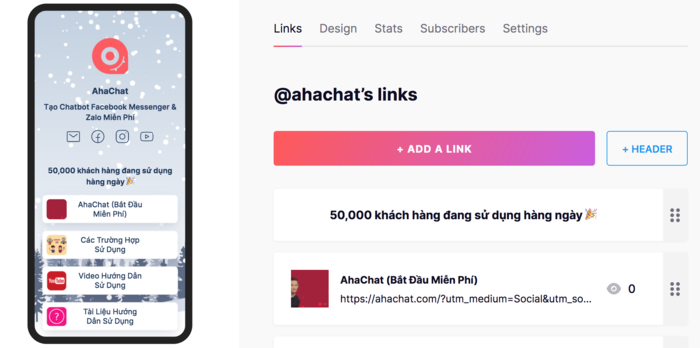
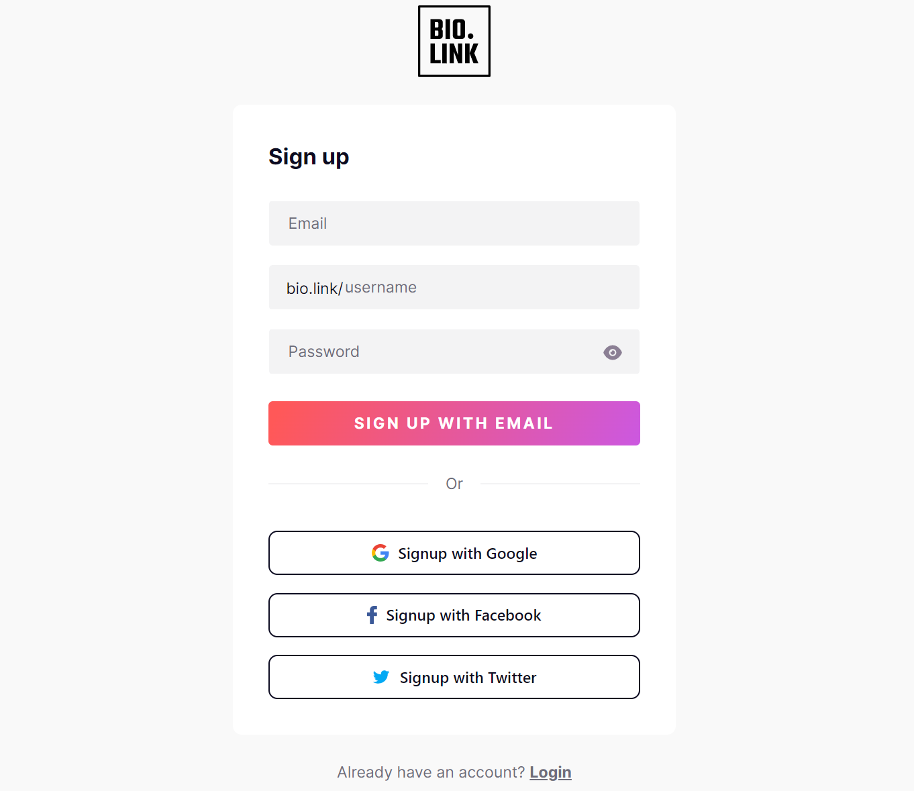
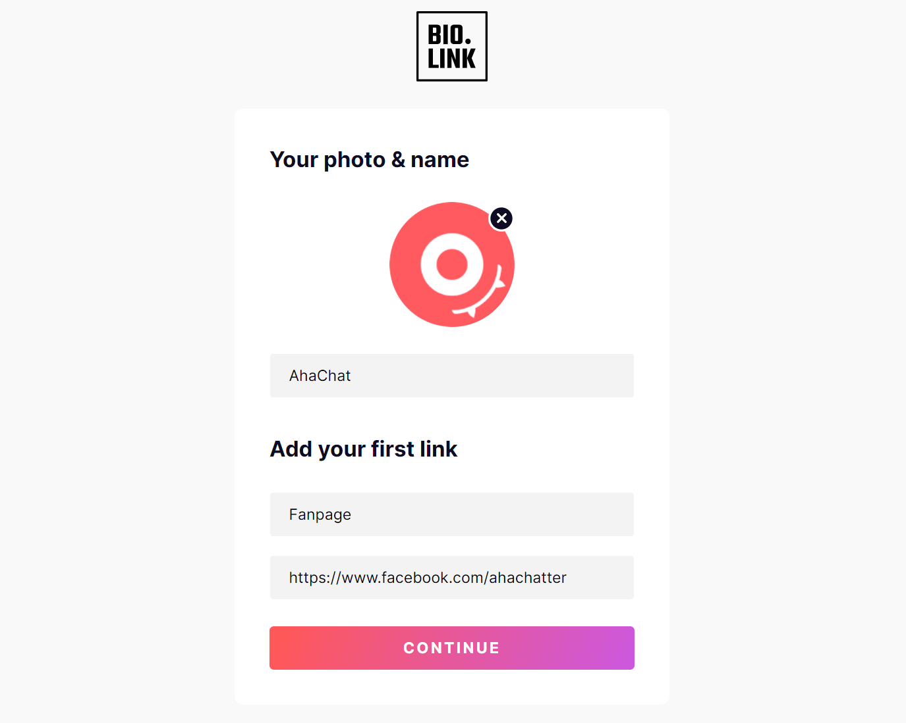
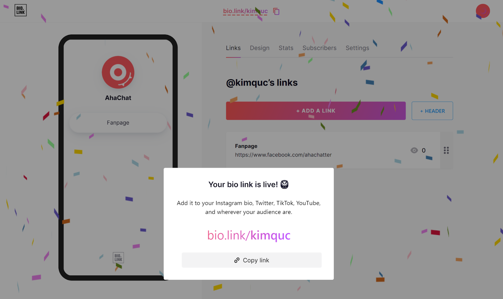
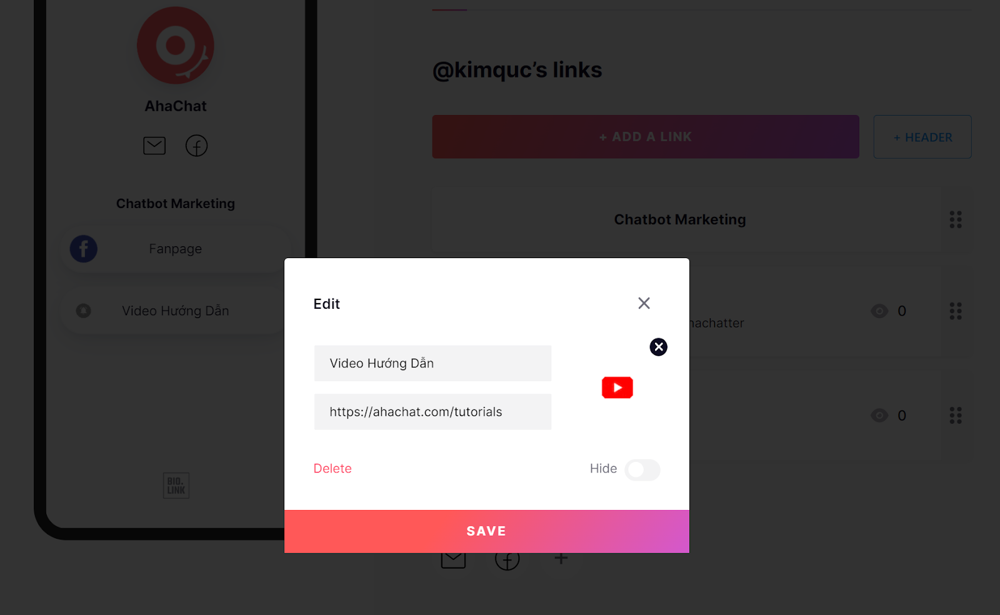
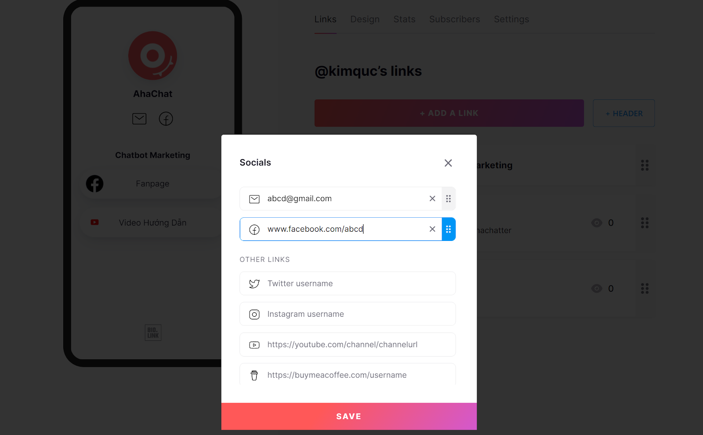
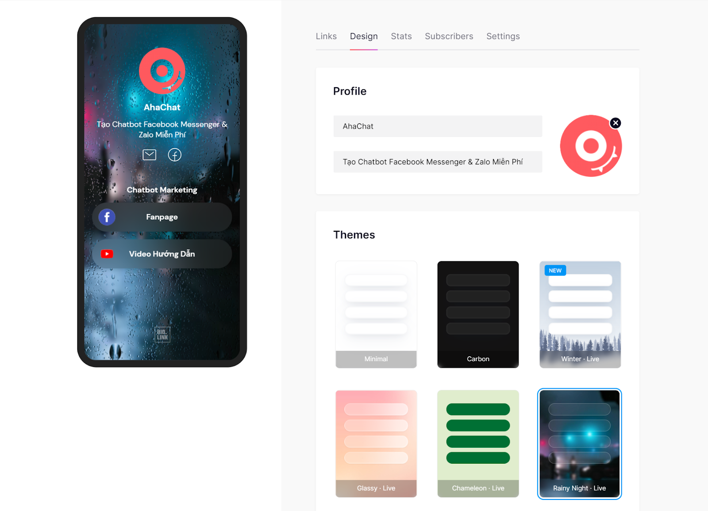
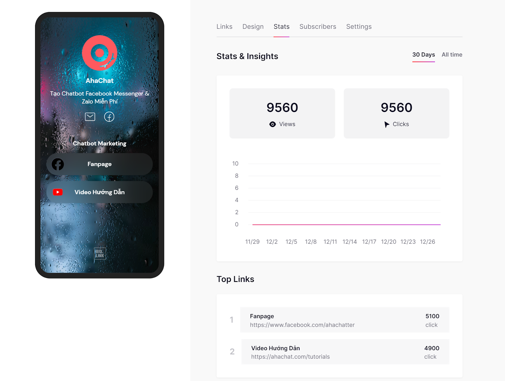
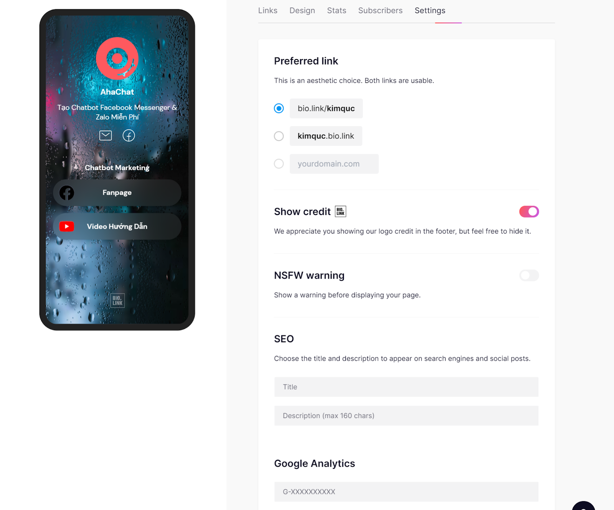

Cách Tạo Bio Link Cực Đẹp Cho Instagram & Tiktok

Ty Nguyen
CEO ❤️ AhaChat. Love babies & chatbot.
Bio Link hay Link in Bio này là cách đơn giản nhất để hướng những người theo dõi từ Instagram và Tiktok đến trang đích, trang web hoặc điểm đến mong muốn của bạn bằng cách Bio link dùng thay thế để thêm nhiều hơn một liên kết từ Instagram và Tiktok.
Và đây là một ví dụ cụ thể nhất về Bio Link của AhaChat, nó sẽ bao gồm các liên kết đến mạng xã hội, blog,… bất cứ điểm đến nào mà AhaChat muốn khán giả ghé tới đó chỉ bằng 1 cái chạm trên điện thoại thông minh.
Và bây giờ chúng ta bắt đầu tạo ngày Bio Link miễn phí cho mình nào!
Bước 1: Đăng ký tài khoản
Truy cập trang chủ https://bio.link/ click vào nút Signup

Nhập thông tin rất đầy đủ, sau đó bấm nút đăng ký:
- username (viết liền không dấu)
- Password
Bạn cũng có thể chọn cách đăng nhập bằng tài khoản google, facebook hoặc twitter

Up ảnh đại diện và đặt tên cho Bio Link của mình. Thêm tiêu đề và liên kết đầu tiên để khởi tạo sau đó bấm Continue.

Bước 2: Thêm các liên kết vào BIO.LINK
Để thêm các liên kết, hình ảnh, video, ở giao diện Dashboard bạn chọn Tab Links
- Bấm ADD A LINK để thêm liên kết mới

- Chọn HEADER để thêm tiêu đề, giới thiệu,...
- Mục SOCIALS để thêm các liên kết mạng xã hội, email

Bước 3: Trang trí BIO.LINK
Chọn Tab Design
- Mục Profile có thể thay đổi lại tên, chú thích cà ảnh hiển thị
- Mục Themes có sẵn nhiều mẫu giao diện, màu sắc để bạn chọn. Ngoài ra bạn có thể chọn Create your own để tự thiết kế giao diện theo ý mình

Bước 4: Xem thống kê và cài đặt BIO.LINK
1. Mục Stats
Ở đây bạn có thể xem số liệu thống kê và thông tin chi tiết lượt truy cập của mình.

2. Settings
Trong tab này bạn có thể thay đổi Preferred link, ẩn hiện logo BIO.LINK, liên kết với Google Analytics, cài đặt SEO trên các công cụ tìm kiếm Google hoặc mạng xã hội.
